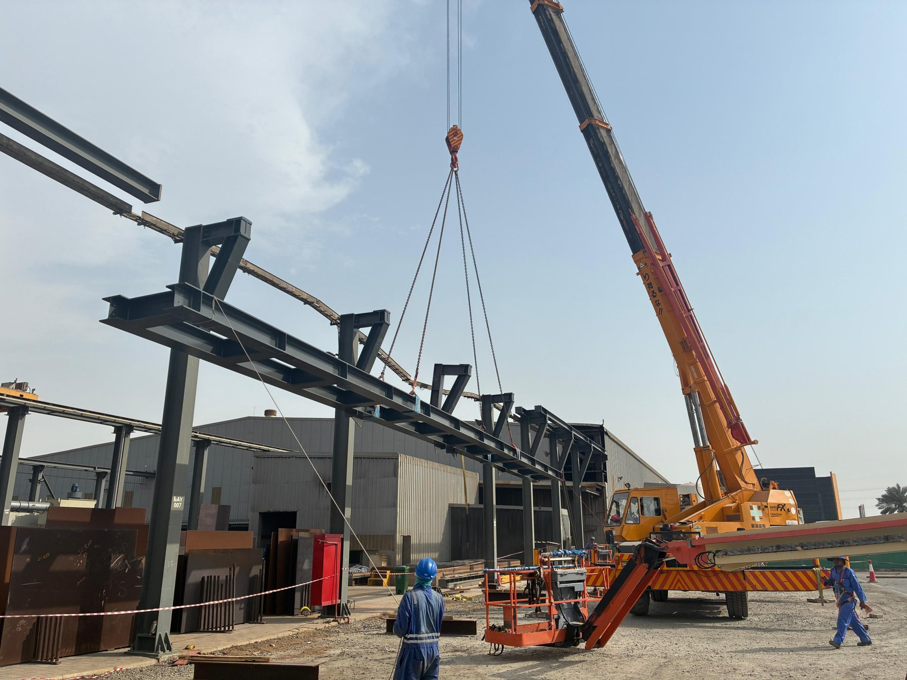
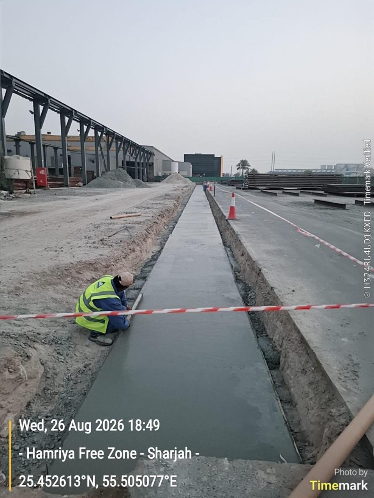

INDUSTRIAL INFRASTRUCTURE
5-Ton Semi-Gantry Crane
Foundation and Rail Alignment
Coordinated the civil foundation and rail-beam works for a 5-ton semi-gantry crane. Used survey results to coordinate rail corrections and arranged a follow-up survey. The crane supplier accepted the corrected alignment in writing.
Foundation interfaceRail alignmentContractor coordination


